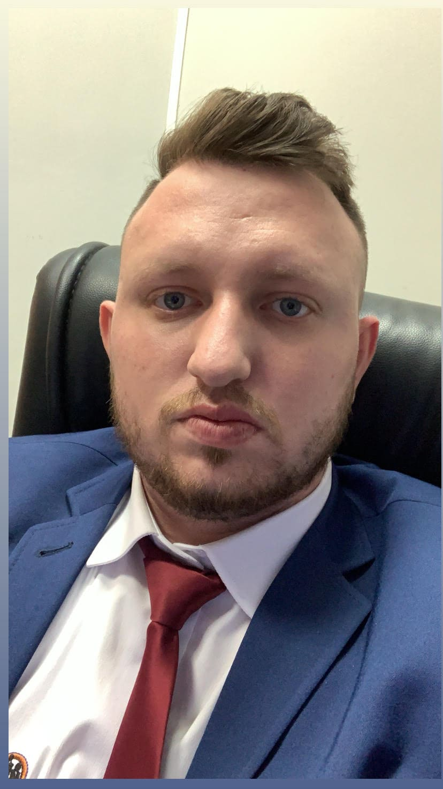

Home
About Me
My name is Lucas Feliciana. I am from Brazil and currently live in Illinois. I am studying Software Development at BYU-Idaho. I enjoy learning about web development, programming, and technology.
I am currently studying Software Development at BYU-Idaho, where I am continuing to build my knowledge in programming, web development, and software design. Throughout my studies, I have worked with HTML, CSS, JavaScript, Python, and other technologies that are helping me develop a stronger foundation as a future software developer. I enjoy learning how websites and applications are created and how different technologies work together to solve real problems. I am especially interested in improving my skills in front-end development, responsive design, programming logic, and creating user-friendly digital experiences. My goal is to continue growing as a developer by practicing consistently, completing real projects, and applying what I learn in practical situations. I also want to strengthen my problem-solving skills and become more confident working with larger and more complex projects over time.
Student Photo

Web Certificate Courses
The total credits for courses listed above is